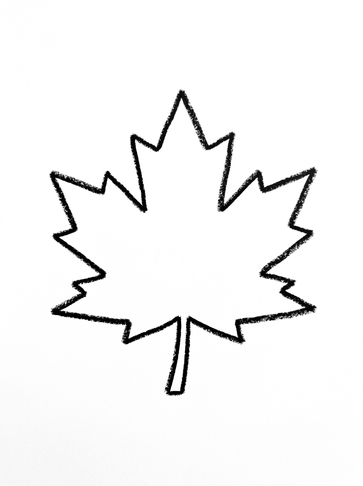
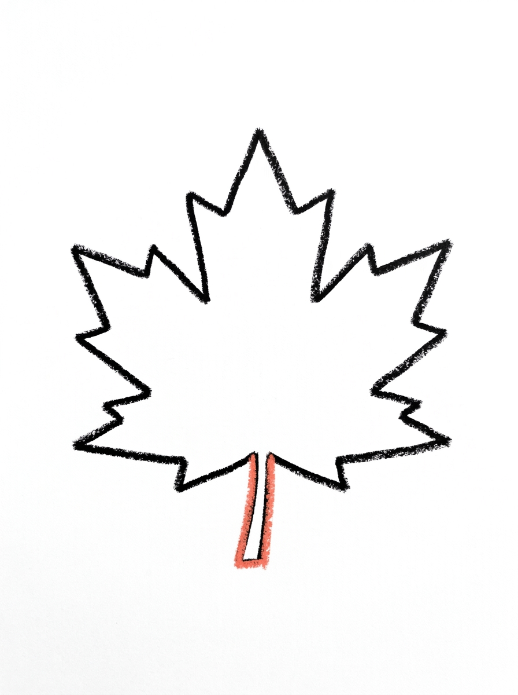
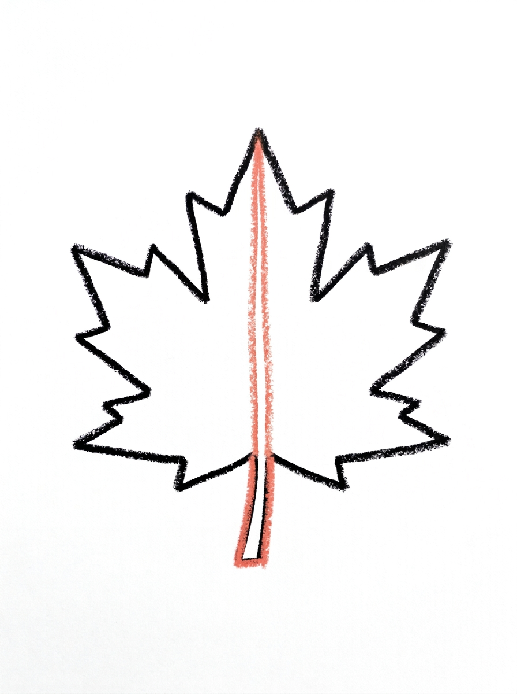
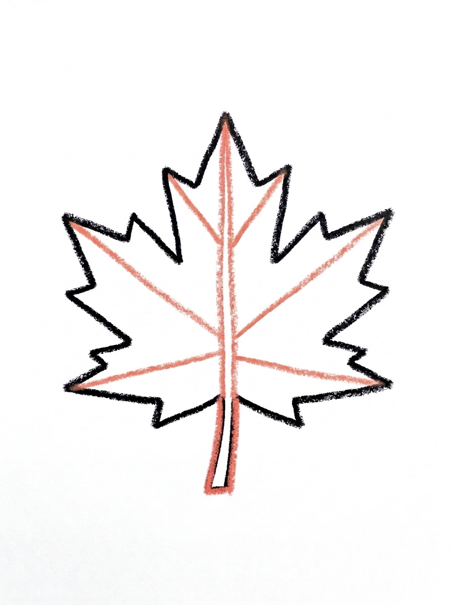
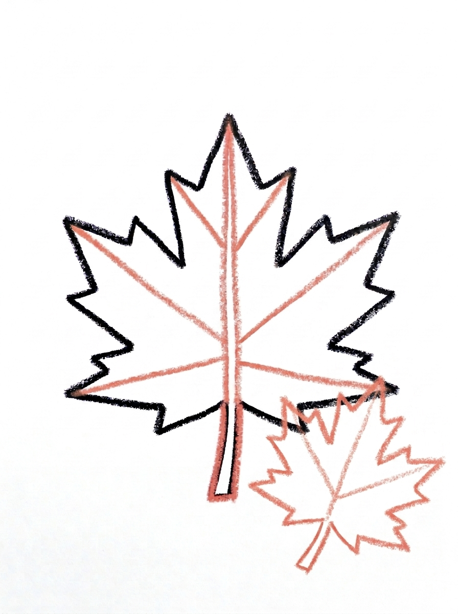

Maple Leaf Drawing for Kids How to Draw A Maple Leaf in 6 Easy Steps
Quick Answer
Draw a maple leaf in six easy steps: start with one five-pointed leaf outline, add a short stem, draw a center vein to the top point, run side veins out to every point, tuck a smaller leaf at the corner, then color them red and orange. Made for ages 3 and up — no signup needed, just print and draw.
At a Glance
- Subject: How to draw a maple leaf
- Ages: 3+
- Steps: 6 steps
- Time: ~15 min
- Difficulty: Easy
- Supplies: Paper, crayons
The maple leaf is fall's most famous shape, and kids are always pleased to discover they can draw it themselves. This tutorial takes the leaf one friendly piece at a time — five points, a stem, and veins that run out to every tip — then adds a smaller leaf buddy at the corner for a finished picture.
✏️ Draw Your Maple Leaf in 6 Easy Steps
One step per box — this step by step maple leaf drawing shows each new part in a different color so kids can see exactly what changed.
Step 1: The Leaf

Draw one maple leaf outline in the middle of your paper — a wide leaf shape with five points: three big points at the top and sides and two smaller points at the bottom, with small jagged steps between the points.
Step 2: The Stem

Draw one short thick stem at the bottom center of the leaf, touching the leaf and pointing down.
Step 3: The Center Vein

Draw one straight line from the stem up through the center of the leaf, all the way to the top point. This is the center vein.
Step 4: The Side Veins

Draw lines from the center vein out to each point — diagonal lines up to the side points, and two shorter lines down to the bottom points. These are the side veins.
Step 5: A Small Leaf

Draw one smaller maple leaf with the same five-point shape, about half the size, overlapping the bottom right corner of the big leaf so the two leaves touch. Give it its own little stem.
Step 6: Color It In

Color your leaves! The big leaf in bright red with dark red veins, the small leaf in orange, and both stems in brown. Great drawing!
📊 Maple Leaf Drawing by Age
Every age can join in — just adjust the job.
| Age | What they can do | Tip |
|---|---|---|
| 3-4 | Trace or copy a simple five-point leaf outline and color it red or orange. | The outline is the hardest step — a wobbly five-point shape is fine, and coloring covers a lot of character. |
| 4-5 | Draw the leaf, stem, and the long center vein on their own. | Count the five points out loud together before drawing the veins — one vein runs to each point. |
| 6+ | Complete all six steps, including the side veins and the smaller second leaf. | Let them choose the fall color pairing — red and orange, or gold and crimson. |
🖨️ Download Your Free Maple Leaf Drawing Printable
The printable lays out all 6 steps one per box, big enough for little hands — kids draw right alongside each step.
⬇️ Open Free Printable 🖨️ Print🎁 Free printable for ages 3+
🍁 Falling Leaves Picture
Turn one leaf into a whole fall scene: draw a curving tree branch or a simple tree trunk at the top of the page, then fill the air underneath with maple leaves in different sizes — some still holding on, some tumbling down. Color each leaf a different fall shade, pile a few colored leaves along the ground, and your child has a full autumn picture built from one repeated shape.
What You'll Need to Draw A Maple Leaf
You only need a pencil, an eraser, and the printed tutorial page showing all six steps. For coloring, fall colors do the work: bright red and dark red for the big leaf's body and veins, orange for the small leaf, and brown for the stems. Yellows and golds are great extras for the falling-leaves challenge.
What They're Learning
This tutorial practices drawing a five-pointed shape with jagged steps between the points, then adding the leaf's vein structure: one straight center vein and side veins running out to every point — five veins for five points, a satisfying counting match. Kids also practice drawing the same shape at two sizes when the smaller leaf joins in step five.
Make It Yours
Color the big leaf green for a spring version, gold for late fall, or crimson with an orange small leaf. Kids can draw a wreath by arranging leaves in a circle, make a leaf family in three sizes, or press a real maple leaf under the paper and rub a crayon over it, then draw the veins in by hand using this tutorial's steps.
🛒 Our Favorite Drawing Supplies
These are the supplies we reach for in our own home — washable (because kids), quality paper, and enough colors to avoid fights.
As an Amazon Associate, MomYouNeedThis earns from qualifying purchases — at no extra cost to you.
💡 Maple Leaf Drawing Tips for Parents
Step one carries the whole drawing: three big points across the top and sides, two smaller points at the bottom, with small jagged steps between them. If your child gets lost mid-outline, counting the points as they go — top, side, bottom, bottom, side — keeps the shape on track. It does not need to be tidy; real maple leaves are jagged too.
The veins in steps three and four follow a simple rule kids can check themselves: every point gets a vein. If a point is missing its line, the leaf looks unfinished even if everything else is right. Have your child touch each point and trace back to the center vein — a quick five-count confirms the leaf is complete before coloring.
✏️ Maple Leaf Drawing Step by Step
This maple leaf drawing saves its surprise for Step 5: the first four steps build one big five-pointed leaf — outline, stem, center vein, side veins — and then a second, smaller leaf joins it, so the finished picture is a pair, not a single leaf.
The small leaf is also the step most likely to go wrong. It has to overlap the big leaf's bottom right corner, touching it, at about half the big leaf's size. Drawn separately, floating beside the big leaf, it reads as a second, unrelated drawing; drawn too big, it swallows the corner it was meant to peek out from.
The remedy is to start the small leaf's outline on the big leaf's edge, not near it — its first jagged line begins on the corner itself. Half size can be judged by eye: the small leaf should cover roughly a quarter of the big leaf, and no more.
See free maple leaf printable for more.
✏️ One Shape Per Step, Six Steps Total
The cleanest check in this maple leaf drawing comes at colour time, because the two leaves wear different colours: the big leaf is bright red with dark red veins, the small leaf is orange, and both stems are brown. If the small leaf ends up red too, the overlap disappears and the pair melts into one blob — the orange is what keeps them separate.
Before colouring, run a line check on the big leaf. The center vein should be one straight line that starts at the stem and ends at the top point, without poking through the outline anywhere along the way. Then count the stems on the whole page: two — the big leaf's short thick stem, and a little stem of its own for the small leaf.
One last check belongs to the small leaf's shape: it needs the same five points as the big one — three big points at the top and sides, two smaller ones at the bottom. A small leaf drawn as a plain triangle has skipped the very shape that makes it a maple leaf.
See free maple leaf printable for more.
🍂 One Leaf for Every Season
Because only the colours change, this one tutorial can fill a whole seasons strip. Draw the leaf pair four times across a long sheet of paper and colour each pair for a different season: fresh green for spring, deep green for summer, the tutorial's red and orange for fall, and brown for winter's last leaf.
Label each pair with its season and the strip becomes a wall display that stays right all year. It is also a rare drawing that can come back out when the season changes and be added to, instead of being finished once and forgotten.
See free maple leaf printable for more.
❓ Maple Leaf Drawing FAQs
What is the easiest way to draw a maple leaf for kids?
Draw a wide outline with five points — three big ones on top and at the sides, two smaller ones at the bottom — then add a stem, one center vein, and a side vein running out to each point.
What age is this maple leaf drawing for?
It is made for ages 3 and up. Younger kids may need help with the five-point outline, while older kids can add all the veins and the smaller second leaf themselves.
What supplies do we need?
Just a pencil, an eraser, and crayons or markers — red, dark red, orange, and brown cover the classic fall version.
Is the printable really free?
Yes — every printable on MomYouNeedThis is 100% free to download and print. No signup, no payment, just tap the download button.
How do I print the maple leaf tutorial?
Print at 100% scale, not 'fit to page', so the step pictures stay their true size. Regular letter paper works perfectly.
Why is the maple leaf on Canada's flag?
The maple leaf has been a Canadian symbol for a long time — maple trees grow across the country and their leaves turn brilliant red in fall, which is why the red leaf sits in the center of the flag.
How many points and veins does the leaf have?
Five points, and the tutorial gives every point its own vein: one center vein to the top point and side veins out to the other four. Counting five and five is a good self-check for kids.
Can we trace a real maple leaf instead?
Tracing a real leaf is a great warm-up, and the two pair well together: trace the outline, then use steps three and four from the tutorial to draw the veins in by hand.
📚 Keep Exploring
- ✏️ All 53 Drawing Tutorials 53 free step-by-step drawing tutorials for kids.
- 🍂 Fall Coloring Free printable fall coloring pages for kids.
- ✏️ Drawing Practice Free printable drawing pre-writing worksheet for toddlers.